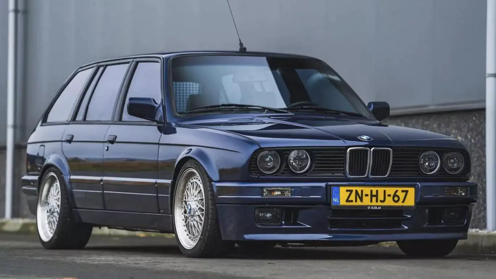

El BMW E30 es un icónico automóvil compacto producido por BMW entre 1982 y 1994. Conocido por su elegante diseño y su agilidad en la carretera, el E30 se ha convertido en un clásico atemporal.
Galería de Imágenes
Aquí se puede ver su versión wagon o touring

También en su versión sedán de 2 o 4 puertas
Y la versión más icónica y famosa, la version deportiva "M"
Especificaciones
Motor: Varias opciones, incluyendo motores de 4 y 6 cilindros.
Potencia: Varía según el modelo y el año de fabricación.
Transmisión: Manual o automática, dependiendo de la versión.
Velocidad máxima: Hasta 225 km/h, dependiendo del modelo.